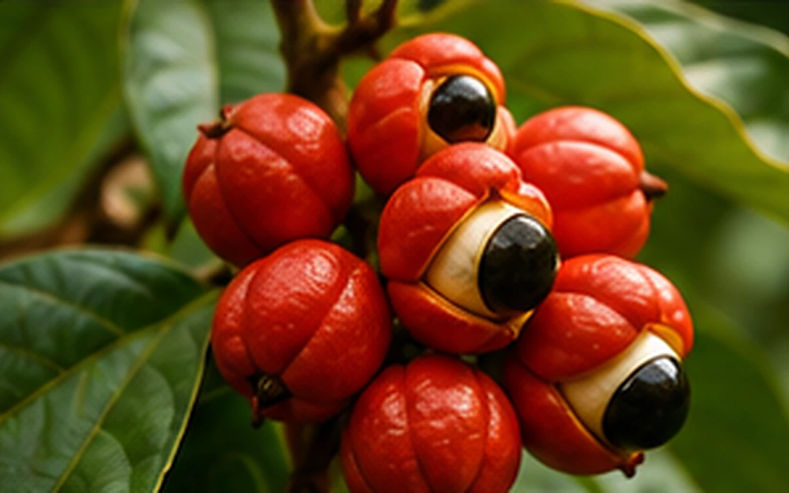
Sateré-Mawé
A autodefinição como “filhos do guaraná” está ligada à história do waranã. Os Sateré-Mawé desenvolveram seu cultivo e beneficiamento, centrais em sua vida cultural e social.
Instituto Socioambiental (ISA)Ver fonteHistórias de resistência, saberes ancestrais, dores e lutas de povos que mantêm vivas suas culturas, territórios e modos de vida.
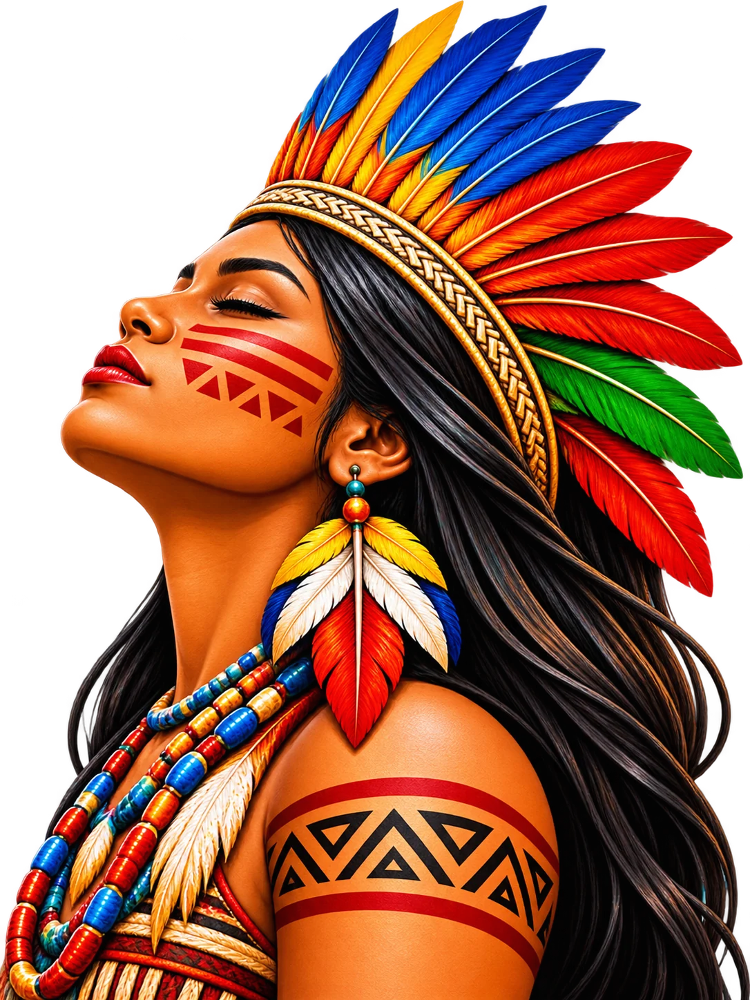
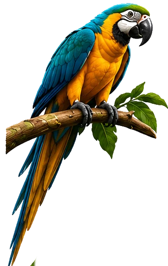
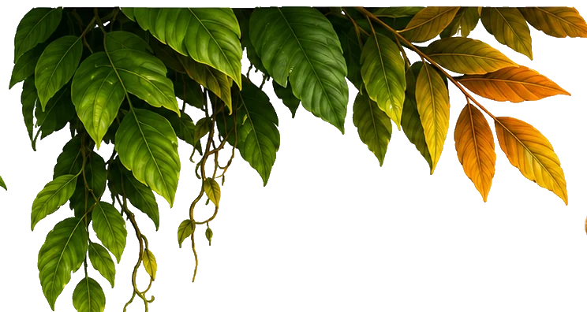
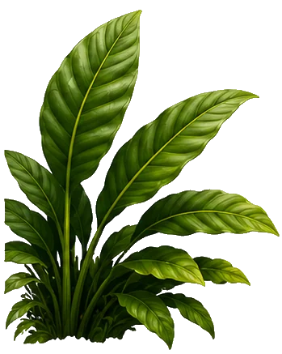
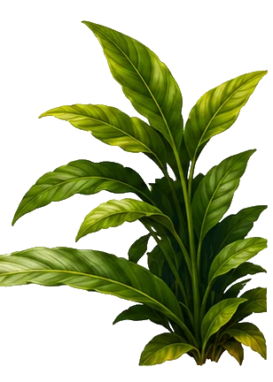
Conheça saberes, tradições e modos de vida de diferentes povos do Brasil. Cada cartão traz links para as fontes consultadas.
Os textos apresentam aspectos específicos de cada povo; não representam todas as comunidades indígenas. As imagens são ilustrações representativas, não registros documentais.

A autodefinição como “filhos do guaraná” está ligada à história do waranã. Os Sateré-Mawé desenvolveram seu cultivo e beneficiamento, centrais em sua vida cultural e social.
Instituto Socioambiental (ISA)Ver fonte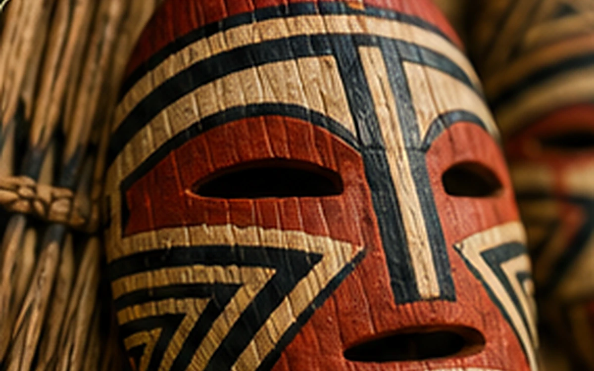
Máscaras, pinturas em entrecascas, cestaria, cerâmica, música e histórias compõem a produção artística Ticuna. A diversidade dessas expressões afirma identidade e resistência.
Instituto Socioambiental (ISA)Ver fonte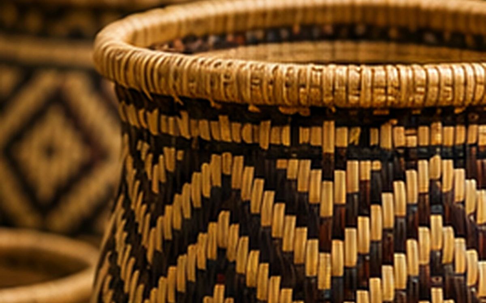
No território do Rio Içana e do Alto Rio Negro, a cestaria Baniwa de arumã reúne técnicas de trançado e desenhos próprios, além de fazer parte das trocas na região.
Instituto Socioambiental (ISA)Ver fonte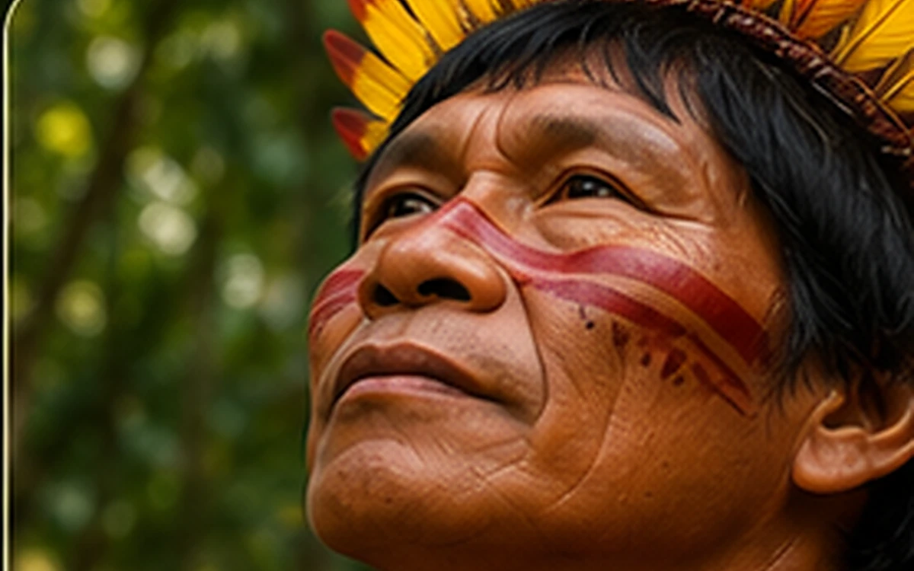
Para os Yanomami, urihi, a terra-floresta, é viva e ligada à alimentação, aos remédios e às relações espirituais. Proteger o território é essencial à continuidade de seus modos de vida.
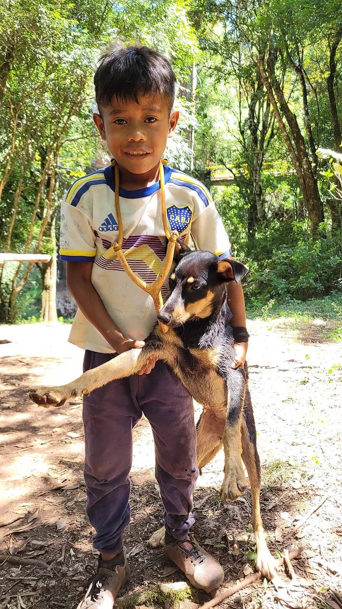
Os Mbya mantêm práticas próprias de cultivo e uma relação entre agricultura, vida comunitária e celebrações. A diversidade de variedades tradicionais de milho e outros cultivos tem papel importante nesse conhecimento.
Instituto Socioambiental (ISA)Ver fonte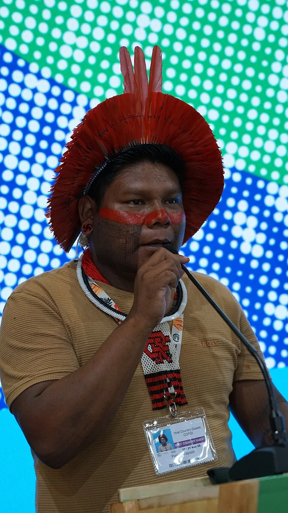
Mebêngôkre é a autodenominação do povo conhecido também como Kayapó. A vida coletiva inclui uma forte tradição de oratória e cerimônias que articulam relações entre aldeia, floresta e mundo natural.
Instituto Socioambiental (ISA)Ver fonte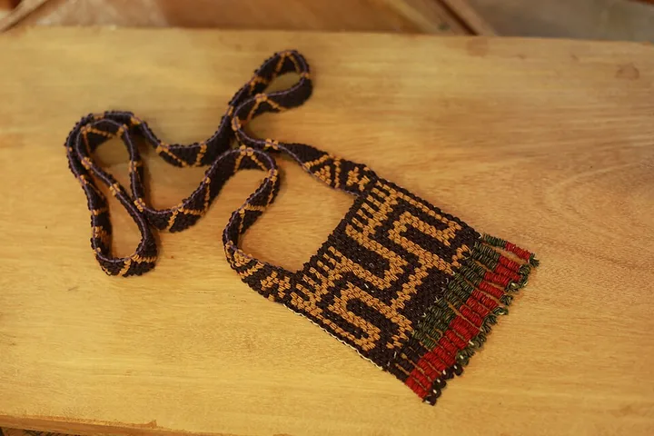
No Amapá, os Wajãpi vivem em aldeias e casas distribuídas entre rios, roças e caminhos. A mobilidade entre esses lugares acompanha atividades cotidianas e relações entre diferentes grupos locais.
Instituto Socioambiental (ISA)Ver fonte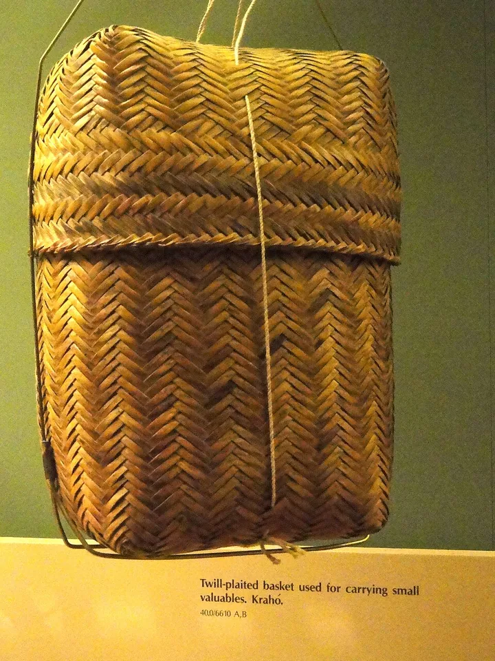
Povo Timbira do Tocantins, os Krahô mantêm conhecimentos e práticas coletivas ligados a rituais, transmissão de nomes e relações de parentesco. As corridas de toras integram diferentes celebrações.
Instituto Socioambiental (ISA)Ver fonte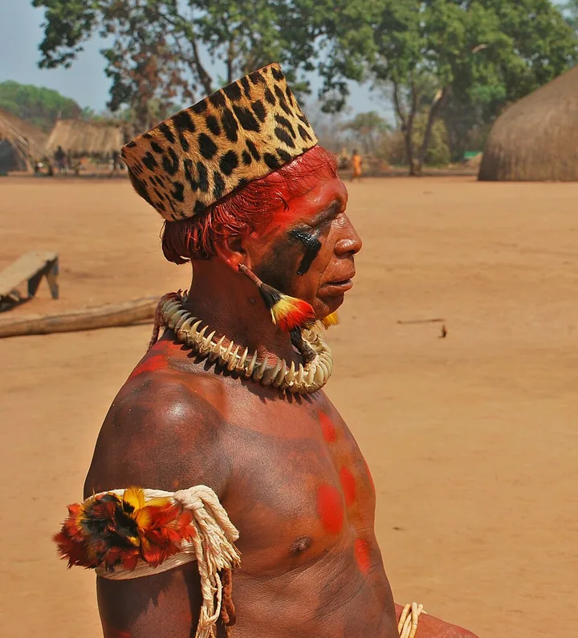
Habitantes do Território Indígena do Xingu, os Wauja são reconhecidos por sua cerâmica, cestaria, arte plumária e máscaras rituais. Esses conhecimentos se relacionam a uma cosmologia própria.
Instituto Socioambiental (ISA)Ver fonteMemórias, ideias e luta
Conheça um pouco das trajetórias de lideranças indígenas e leia suas palavras nas entrevistas que serviram de fonte.
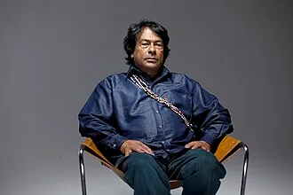
Povo Krenak · escritor e ambientalista
“A realidade do planeta se associou com a ideia de fim de mundo.”
Liderança indígena e ambientalista, Krenak participou da mobilização pelos direitos constitucionais dos povos indígenas e compartilha suas reflexões em livros e entrevistas.
Ler entrevista à Assembleia de Minas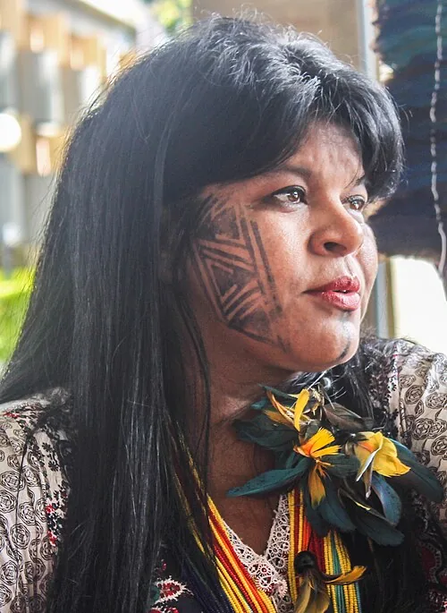
Povo Guajajara/Tentehar · Maranhão
“Em primeiro lugar, é garantir os territórios dos povos indígenas.”
Liderança Guajajara/Tentehar e ativista, Sônia fala nesta entrevista sobre representação política, proteção territorial e direitos dos povos indígenas.
Ler entrevista ao Ministério dos Povos Indígenas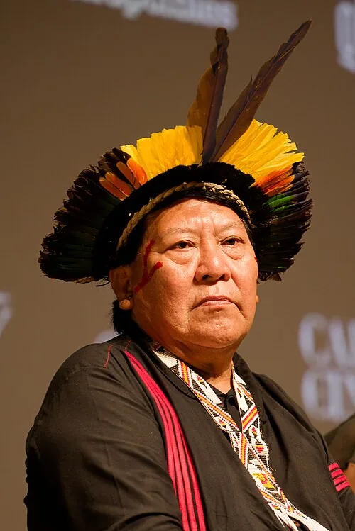
Povo Yanomami · xamã e porta-voz
“Eu estou vivo ainda porque a nossa terra está viva.”
Xamã e porta-voz Yanomami, Kopenawa conta sua trajetória e a defesa de seu povo em uma entrevista publicada pela revista acadêmica Práticas da História.
Ler entrevista e bibliografia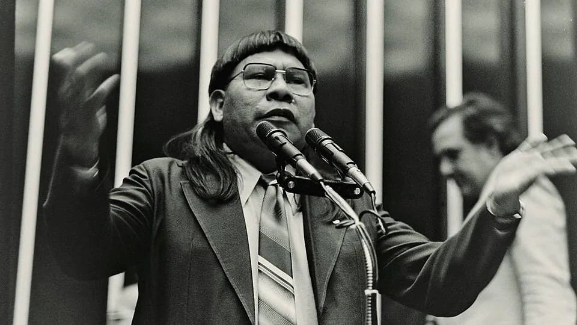
Povo Xavante · cacique e deputado
“Passei a trazer comigo um gravador como única arma contra as promessas mentirosas das autoridades.”
Primeiro deputado federal indígena eleito no Brasil, Juruna levou ao Congresso a defesa dos direitos e territórios indígenas.
Ler discurso nos Anais da Câmara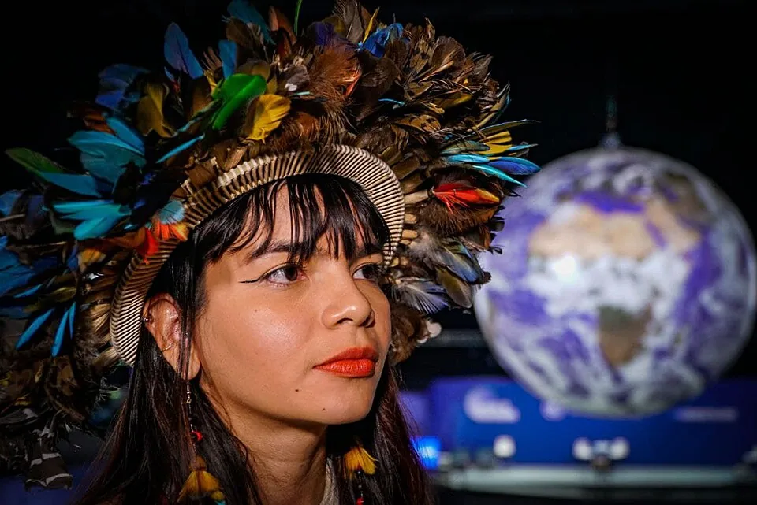
Povo Paiter Suruí · ativista climática
“A Terra está falando. Ela nos diz que não temos mais tempo!”
Ativista indígena de Rondônia, Txai ganhou projeção internacional ao discursar na abertura da COP26 sobre a crise climática.
Ler perfil no Instituto Socioambiental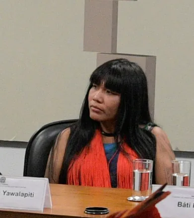
Povo Yawalapiti · liderança de mulheres
“Não. Watatakalu é o meu nome.”
Liderança do povo Yawalapiti e articuladora das mulheres do Xingu, sua história oral destaca identidade, educação e protagonismo.
Ler história oral no Museu da Pessoa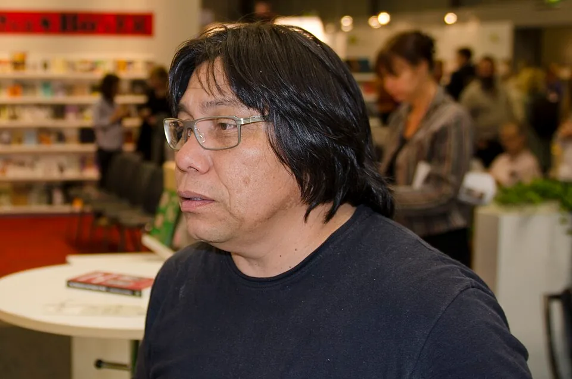
Povo Munduruku · escritor e educador
“Como parte da sua memória, da sua história, da sua identidade.”
Escritor e educador, Daniel publicou dezenas de livros e atua na valorização da literatura e dos saberes indígenas.
Ler entrevista ao IHU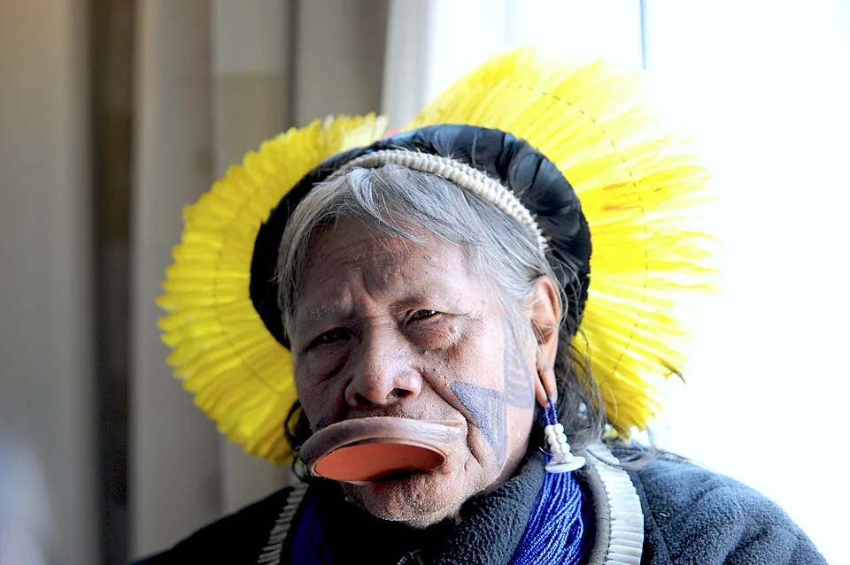
Povo Mebêngôkre (Kayapó) · liderança
“Minha luta, minha fala é para protegermos nossas florestas, nossos rios, nossa terra.”
Cacique e liderança Mebêngôkre reconhecida internacionalmente pela defesa dos povos indígenas e da Amazônia.
Ler entrevista ao Museu do Índio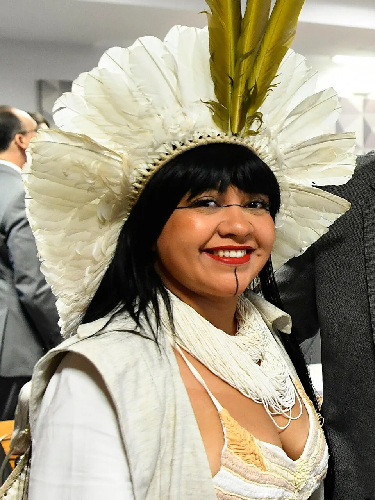
Povo Xakriabá · educadora e deputada
“O território é nosso corpo, nosso espírito.”
Professora e deputada federal, Célia leva ao debate público a defesa dos territórios, da educação indígena e do Cerrado.
Ler entrevista à Revista Mátria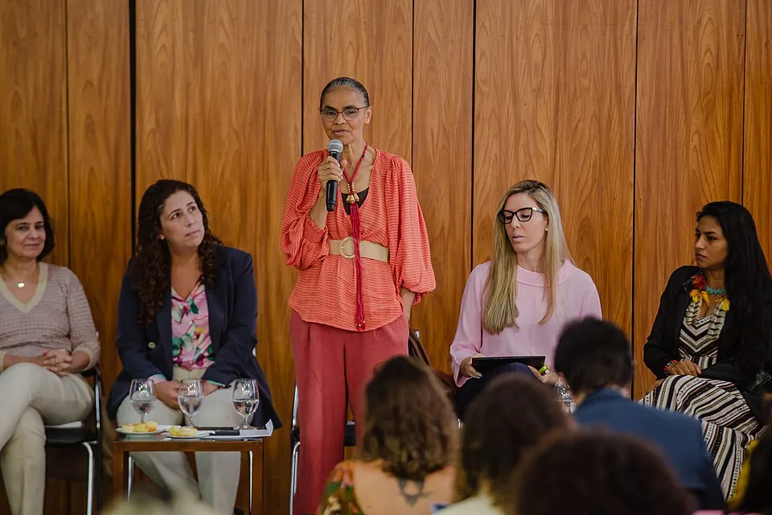
Povo Xipaya · cacica e ativista
“Eu quero que os meus filhos vivam e usufruam do nosso território.”
Cacica do Xingu e defensora de seu território, Juma também atuou na Secretaria Nacional de Articulação e Promoção de Direitos Indígenas.
Ouvir e ler entrevista à Enap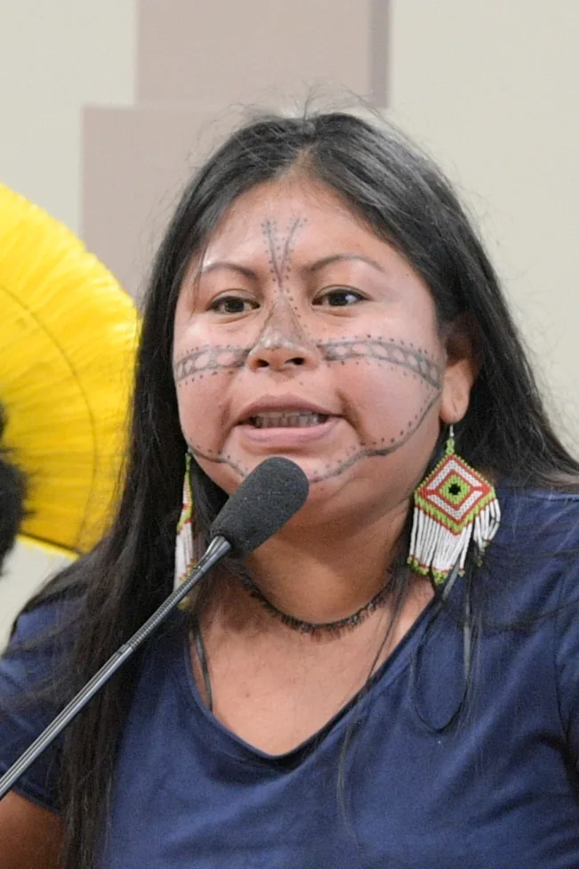
Povo Munduruku · defensora territorial
“Quando é para defender nosso território, a gente vira gigante, vira onça.”
Liderança Munduruku do médio Tapajós, reconhecida por organizar a defesa territorial contra garimpo ilegal e grandes empreendimentos.
Ler entrevista ao UOL Ecoa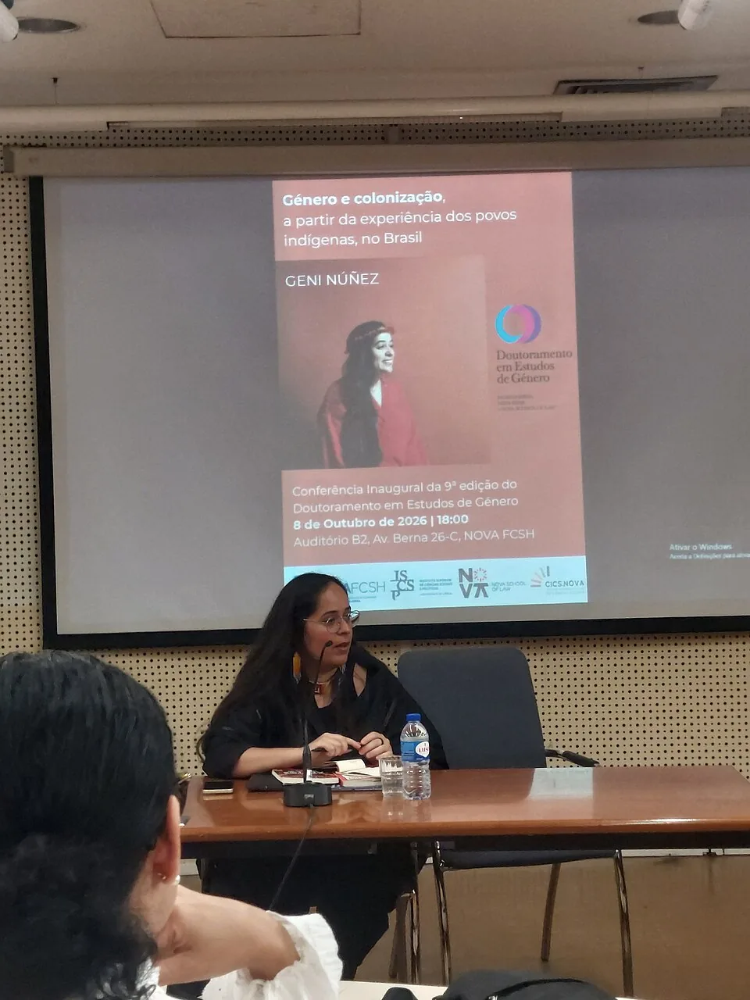
Povo Guarani · psicóloga e pesquisadora
“O mundo é mais interessante do que o binarismo nos sugere.”
Psicóloga, escritora e pesquisadora Guarani, Geni aborda diversidade, relações e os efeitos da colonização.
Ler entrevista à Matinal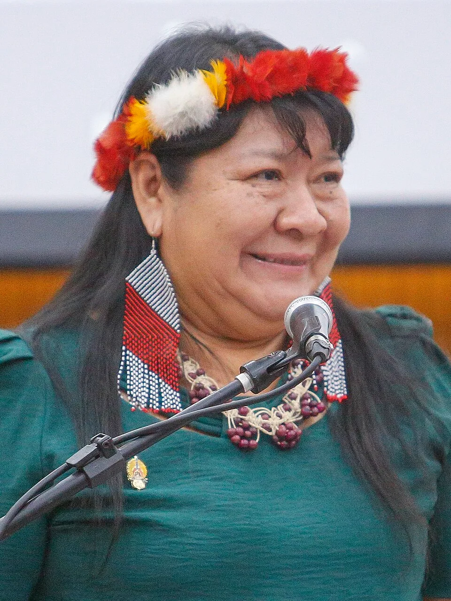
Povo Wapichana · advogada e liderança
“A necessidade de ter uma representação parlamentar indígena no Congresso Nacional e defender os direitos indígenas.”
Advogada, foi a primeira mulher indígena eleita deputada federal no Brasil e a primeira pessoa indígena a presidir a Funai.
Ler entrevista à FunaiChat do encontro
UNIESBAM · Cultura Afro e Indígena